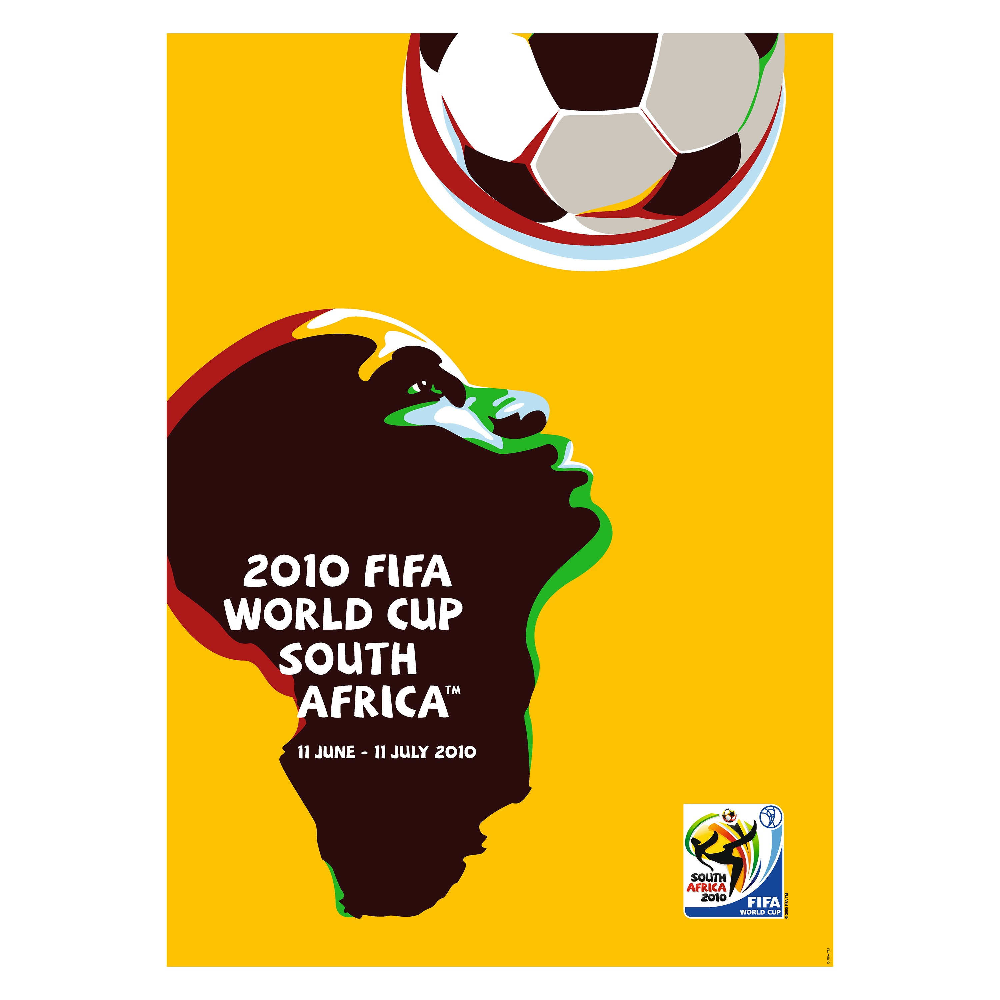
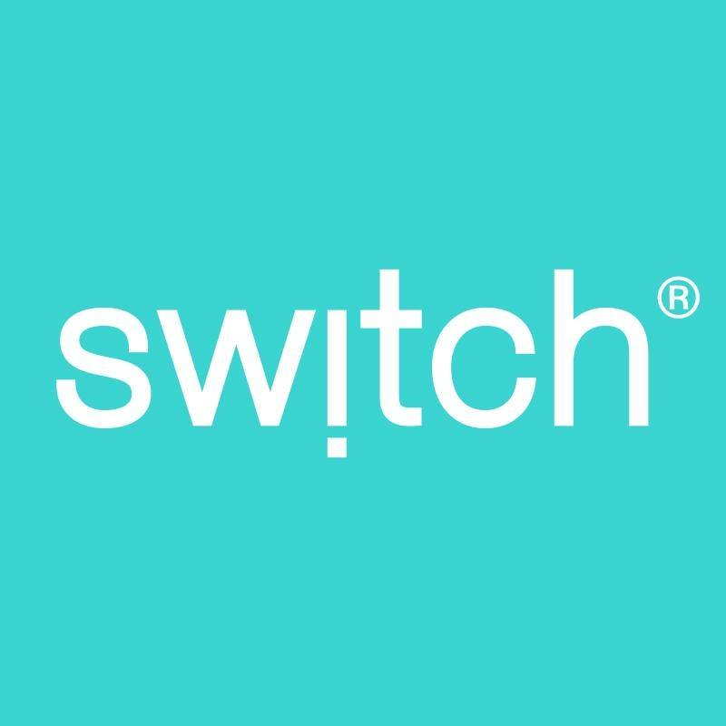

Official Poster
The official 2010 FIFA World Cup poster was designed by the South African creative agency Switch (now Switch Branding) and was selected through a nationwide public vote in South Africa.
The poster features a stylized silhouette of a player's head and neck that merges into the shape of the African continent. The player is shown heading a football, looking upward to symbolize "hope and aspiration".
It utilizes a vibrant yellow-dominant scheme alongside other traditional African colors like gold, red, green, and blue.
The concept and typography were led by Gaby de Abreu (founder of Switch), with illustrations by Paul Dale.
The winning design was chosen from a shortlist of three posters in 2007. Public participation was central to the selection, with the Switch design emerging as the clear favorite after approximately 50,000 votes were cast during a five-day poll.

Switch
Switch was appointed to design the Brand Identity and the Brand programme for the world’s largest sporting event, the 2010 FIFA World Cup. The brand identity reflected a dynamic combination of skill, culture, colour and pride which translated into a simple image that captured the essence of the world’s biggest football celebration in Africa.
Established in mid-1999 in Johannesburg, South Africa.
Led by founder and Group Executive Creative Director Gaby de Abreu, who personally conceptualized many of the FIFA designs.
Headquartered in Johannesburg with offices in Cape Town and London, it has grown to be the largest independent design consultancy in Africa.
Their portfolio includes brand identity work for Coca-Cola, MTN, Springbok Rugby, Four Seasons Hotels, and Investec.